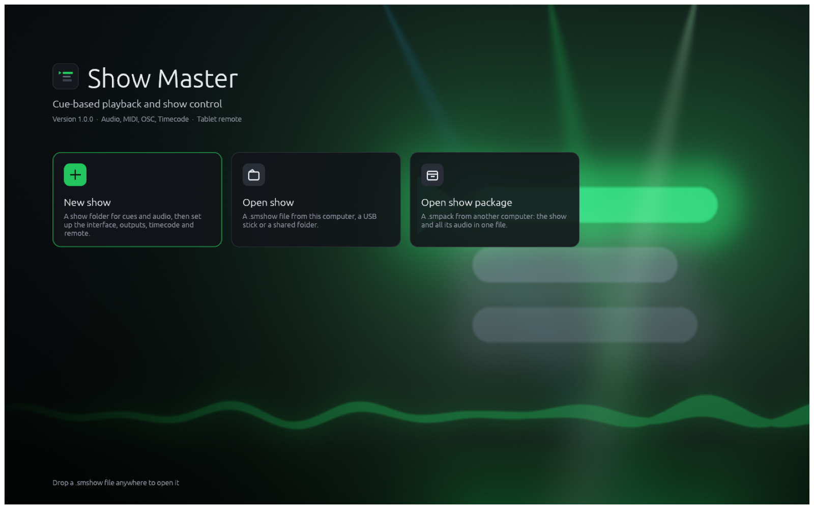

Showtime Suite
Showtime Suite
Show Master
The cue list for theatre, events, installations and concerts. GO fires the next cue: audio with fades, MIDI, OSC, HTTP and timecode, all from one list. Runs completely offline.
For macOS, Windows and Linux. Easiest with Showtime Suite, which also keeps it up to date.

What it does
Cue list with playhead
GO fires the cue at the playhead and moves on. Groups, wait times, follow-ons and loops.
Every kind of cue
Audio, fades, MIDI (with SysEx and MSC), OSC to desks and other tools, HTTP, timecode and control cues.
Timecode
LTC as audio, MTC and RTP-MIDI at the same time; cues can fire at timecode times.
Tablet remote
Open showmaster.local on a phone or iPad: a view, a remote with GO and Panic, and a stage display. Pair with a QR code.
Edit and Live
Build the show in Edit mode with waveform and routing matrix; Live mode is read-only with big buttons.
Backup computer
A second computer with the same show follows along and takes over.
Show packages
Show and all audio files in one file; cue sheets as PDF or CSV.